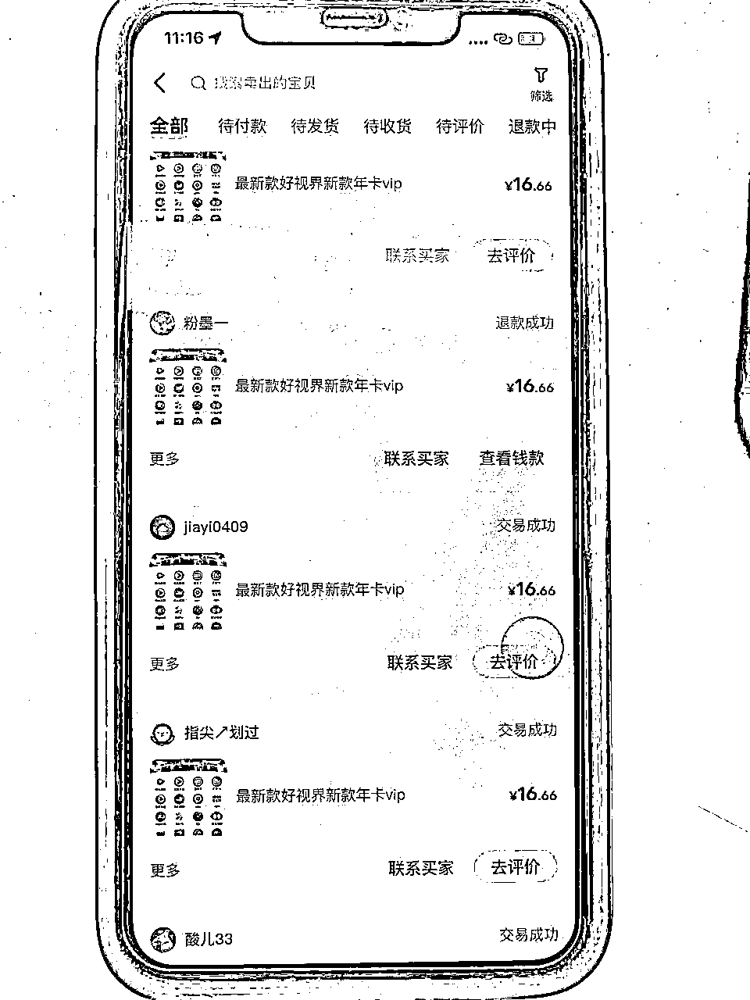
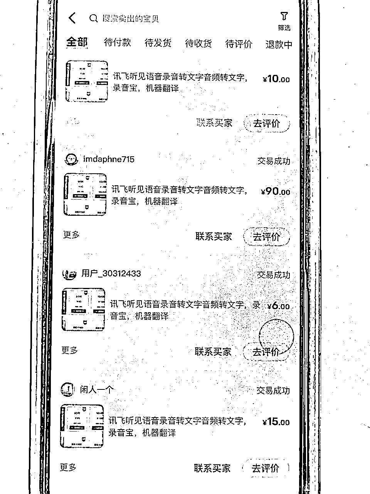
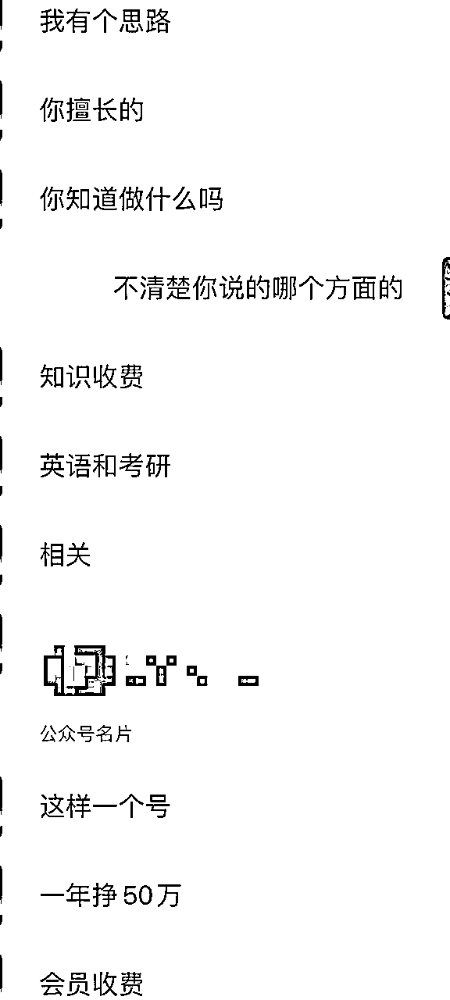
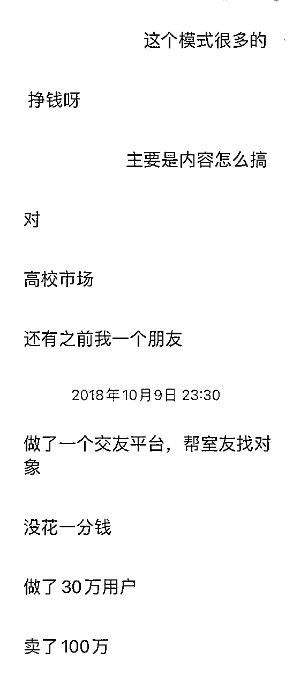
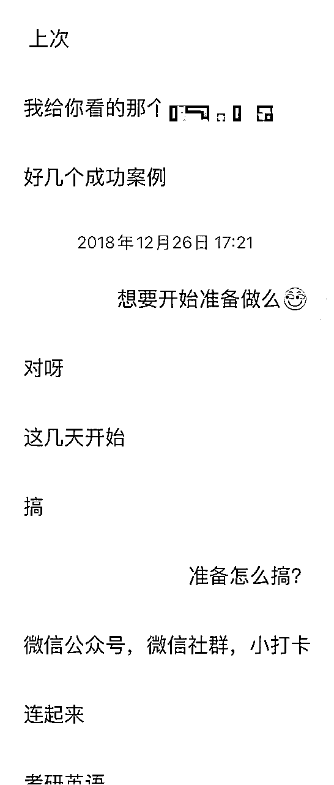
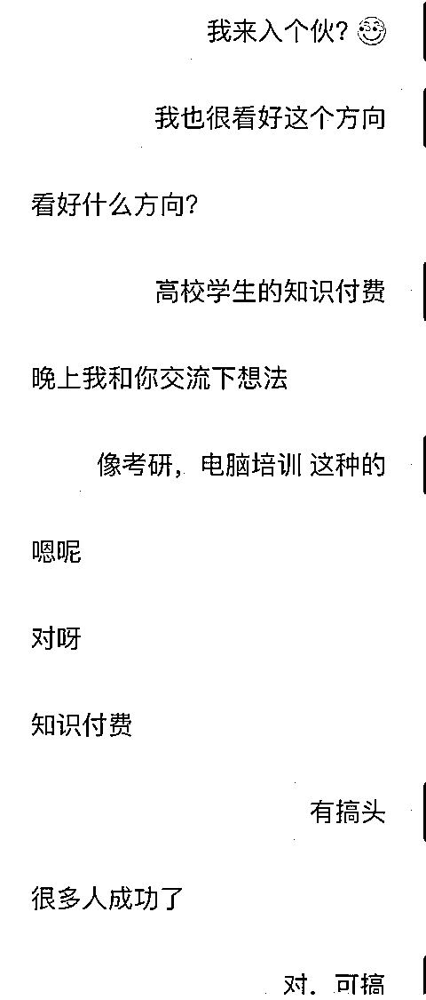
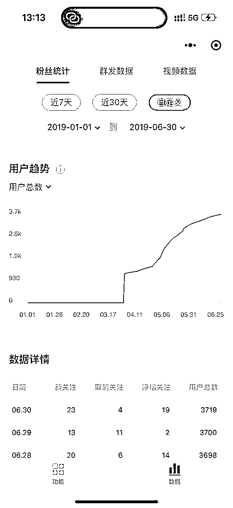
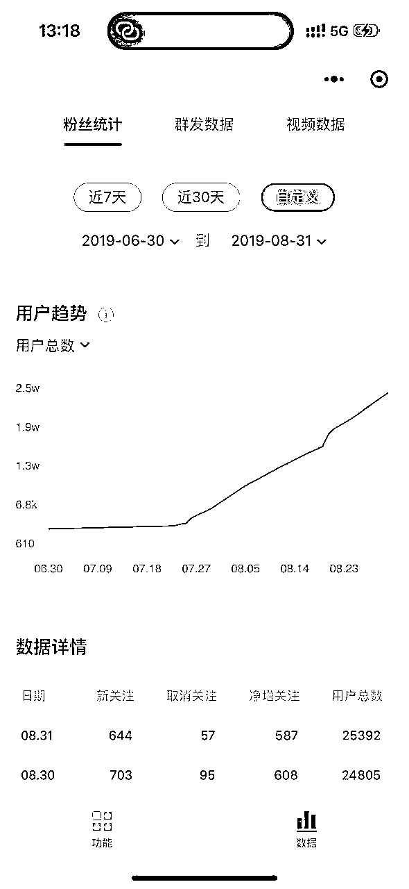
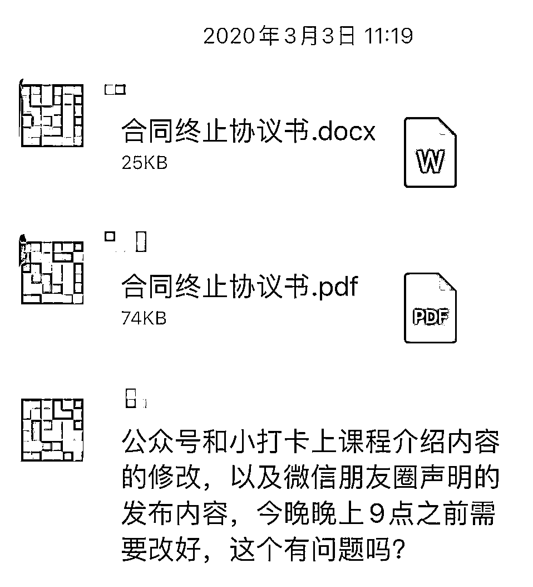
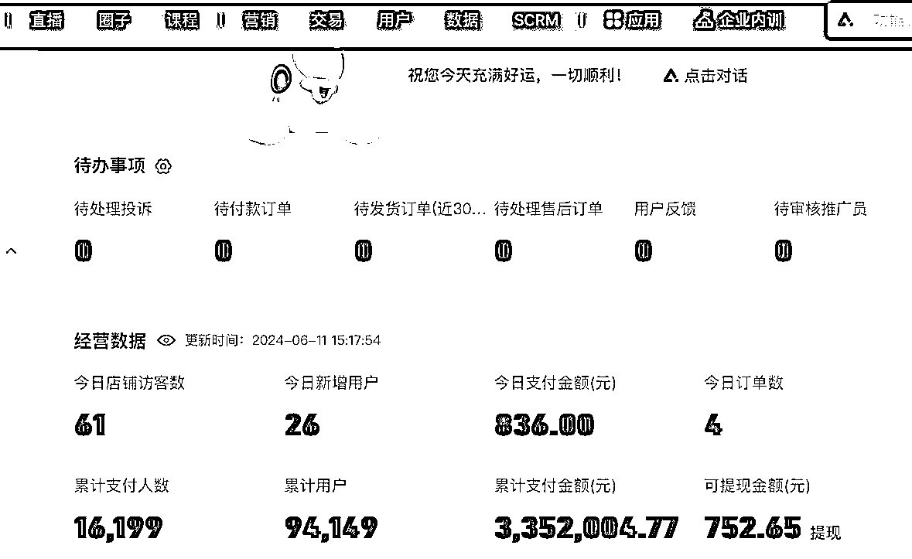

来源：https://mmxdvhf07x.feishu.cn/docx/HLaKdw7xpoSBPExq760cyGKpnBh
大家好，我是Tilly。我先简单自我介绍一下，我主业是互联网产品经理，目前从业第9年，大大小小公司都待过，各个行业的产品也都涉及过（如社区社群、K12教育、互联网医疗、O2O、NFT、元宇宙、AI、政务SaaS等等）。我在工作第2年的时候，发现产品经理的工作并不能改变世界，完成的只是领导的想法而已。我就摆正了工作的态度（仅仅是一份工作而已），开始了副业的研究。
一、副业的初期研究
我的副业在2016年底（如果没记错的话），从闲鱼开始，当时正好在逛闲鱼买一个影视会员，发现了一个可以看各种DB视频集合的APP，我尝试买了一个。发现这个APP里面有一个入口，可以联系开发者，可以自己也可以卖这个APP的年卡。我就开始模仿这个影视会员的售卖方式，在闲鱼上上架，当时流量非常大，两周卖了2000多，我的一个闲鱼号也就此被封了，也就停止了（毕竟有版权问题）。在这个事情之后，也坚定了副业可以搞的信心。
后面（2017—2018年）也尝试做了很多类型的副业，比如：
1、我在某个网站上学习炒股视频，发现必须注册新用户会有100无门槛优惠券，然后在网上搜索发现了接码平台的存在（当时用的好像是叫易码，不知道现在还有没有这个平台）。然后用接码平台可以搞一些新用户的注册优惠；
2、我在帮领导整理录音文件时，发现了讯飞听见等录音转文字的网站，配套上面的接码平台的新用户优惠，可以用来卖录音转文字的服务（目前这个类型生意的依然有人在做）；
3、在网上发现一些卖互联网实操的分销站点课程，付费进入后发现里面的一些课程在淘宝是有不错的流量，就把那些差价比较大的课程单独在淘宝上架；
4、某天逛闲鱼推荐时发现了某个商品，很好奇，然后同样关键词在拼多多上搜了一下，发现价格差价有一倍。发现了闲鱼—淘宝的差价模式，找了几个商品在闲鱼上架，客户买了再去拼多多下单；
5、将上面的方式进行SOP化打包，写了一些操作指南，在闲鱼上收徒，收了两个徒弟。
那两年工作之余陆陆续续的研究了上面这些副业的玩法，加起来赚了小几万块，因为有一定的版权或者灰产风险，也就不再做了。还做了一些其它的研究，比如NFT等就不过多阐述了。
下方是我做这些的截图，期间换过几个手机和两个电脑，有些记录找不到了：


二、5年考研副业研究
2018年中，互联网的社群概念很火，我正好在杭州一家互联网医疗公司负责社群产品，用社群产品（在类似wetool的这种工具）二次开发+小程序的方式帮助公司获客。我一个大学的朋友（后面考研副业的合伙人），和我说有个关于考研英语阅读理解的培训生意，问我感不感兴趣，有没有兴趣一起做。当时工作也比较忙，看了一些竞品稍微调研了一下，感觉可以搞。


到了08年的12月底，我那个合伙人又来找我，说可以开始启动了，我当时工作正好没那么忙，就开始搞起来了。这一搞，到今天就快2000天了。


1、关于如何启动这个项目（MVP）
启动这个项目主要要解决3个维度的事情：
内容从哪来？流量从哪来？课程怎么设计？
先说一下我和我和合伙人的分工：
他负责：人员招聘、商业合作、流量合作
我负责：内容运营、社群运营、课程设计和把控、新媒体运营、后期投流
1.1、内容和课程设计
我们做的考研英语阅读理解培训，内容主要是来自于外刊，然后对外刊进行精读解析。合伙人找了一个武汉大学的研究生做我们的内容合伙人，给她30%个点，由她负责对应的内容制作，我负责课程设计。当时我报名了几个竞品的课程，吸取每个平台的优势，再结合定价，设计了一套课程体系。然后由我们内容合伙人负责实现这套课程体系，这套课程体系在当时来看是颇具竞争力了。
1.2、流量
我合伙人是在某211的高校任职，学生资源很多，所以他找到了他之前的一个学妹，当时在清华大学读研究生。让她IP入股，给她5%。如有生产教学内容，再按内容的比例分红给到她。就借助着她的名义，我进行对应的包装和宣传。当时小红书和B站也没那么火，流量主要来自于豆瓣、知乎和贴吧。我只要上班一有空，我就去这些平台对应的帖子里去留钩子。
我们的课程当时是入驻在小打卡平台（因为有其他两个竞品也在这里入驻，我们的课程体系和价格很有优势，只要一对比，用户选择我们的可能性很高）。同时我分析这个小打卡平台的推荐规则，和这个平台的运营人员打好关系（吹嘘我们这个课程可以给他们平台带来流量），让她给我们多一些曝光流量和推荐。
整个链路其实就通了：
A、通过其他平台（豆瓣、知乎和贴吧） 看到钩子——>导流到公众号——>公众号每天推文（免费内容）——>(加助教)到付费课程
B、通过其他平台（豆瓣、知乎和贴吧） 看到钩子——>导流到公众号——>公众号读者群——>(加助教)到付费课程
C、小打卡平台——>看到课程推荐——>（加助教）到付费课程
当时大概在2019年的前6个月内都在用以上的MVP打法，6个月，公众号做了3000多粉丝，业绩一个月最多也就2000的样子。

2、MVP时代的项目爆发期
19年暑假到了，我的合伙人高校也放假了，他也有充足的时间进行商业合作。当时在知乎上开始砸钱找人商业合作。当时知乎商业合作的效果是真的好，几千块广告投下去，可以带来2万多粉丝。业绩也就跟着增长，一个月业绩也能上1万了。

3、MVP时代的项目稳定期
由于是副业，我和合伙人前期基本上也没投入太多时间，我一天花2-3个小时，他一天花1-2个小时（他有寒暑假，寒暑假投入时间会更多一些）。
MVP时代持续了1年左右，按照上面的方式进行每天的日常运营。
4、项目大爆发期和内容合伙人跑路
在2020年2月考研成绩公布以及国内YQ的爆发，我们辅导的第一届考研学生的成绩出奇的好，很多学生在社交平台上推荐我们。也伴随着学生居家学习，在线课程的需求量井喷。在考研出分的那几天，我们最多的一天业绩可以上万。但伴随着而来的是，我们的内容合伙人不准备干了，她觉得她分少了。之前是营收分给她35%个点。其实对我和合伙人来说其实没什么成本。比如营收1万，我和合伙人各分3000，除去开支，给内容合伙人分3500的样子。当时最多一个月搞了近8万，她也分了3万多，她也觉得少了，她就出去自立门户了（经过后面几年的验证，考研领域的生意，内容+流量两者结合才行，她自己做的那个平台一直非常惨淡）。

我们就不采用内容合伙人的模式，开始招聘内容团队，招了一个主编负责人负责整体内容（主编负责人再给少量利润的分红），以及若干个主编和校对的负责每天的内容把关，同时也升级了对应的内容服务。现在内容团队是我这边在负责管理，每个月成本大概在3w的样子（包含后面的其它业务），招了内容团队也意味着每个月最少要搞到成本值以上才能不亏本。
5、考研领域的其它衍生
前两年没有意识到考研流量的价值，流量来了，我们这里其实只有这一门课，转化其实很低。我又做了其它几个尝试方向：
A、找主编做了其它两门课，语法课和真题课，由于这两门课市面上太卷了，很难打出差异化，所以销量就一直很差（卖了2年，除去成本这两门课只赚了1万多），到后面只能作为赠送课程了。
B、考研领域公众号，孵化了一个2个考研领域公众号，专门做考研经验分享，做了1年多，各有10万粉，从去年年中开始处于停滞状态，很难涨粉了。这两个号主要是用来接广告，每个号1年可以赚1w的样子。今年考研领域的品牌方已经不怎么投广告了，今年都没接到广告了。
C、考研领域淘宝联盟，在考研微信群里卖书（书来自于淘宝联盟的一些分销）；考研微信群分为自营和合作，不仅是我们自己来的流量来卖书，我们也帮其它的一些考研大V运营考研社群。鉴于去年年底，微信对于WeTool等工具的封杀，我们好多运营号都没了，今年也不做了。最多的一年搞了小几万。
D、考研作文模版：去年找了两个主编搭建的作文课程，由于我们找的主编出的质量很高，我设计的课程模式也是独一无二的，在考研作为模版领域是有差异化的。去年一年赚了10多万。今年会进行推这个课程。
6、考研领域“大萧条”时期的突围
从去年年中开始，整个考研领域都陷入了“大萧条”时期（流量差，考研号没有课程的基本上赚不到什么钱）。知乎前年开始没落，小红书去年开始严封导流，B站今年开始没落。我们在整个大萧条时期想要突围也是做了一些尝试：
A、To 大B：联合一些考研大V，帮我们分销课程，给40%售价的提成（除去成本，只能微赚10-20%）；在他们的公众号菜单栏和关注后的首问语里加上我们的课程；（前年就开始做这个方向）
B、To 小B：找一些对考研领域感兴趣的用户（或者学生用户），在小红书或者知乎上发考研经验贴，给他们开通课程推广员权限，也是给40%售价的提成；对于一些没有经验的用户，我也整理有了一些SOP，帮助他们发帖；（如果他们的号运营起来了，也会再结算一部分商业合作的费用给到他们）
C、投流：之前走的商业合作的方式，在这些平台（知乎、公众号、小红书、B站）想要商业化的时候已经不太能走通了，现在是向平台买流量的时候，而不是个人。所以也开始了小红书的聚光投放、以及B站的起飞计划三连推广。

这个副业整整做了5年多，大概全网累积了有100万粉丝，所有课程和产品卖了加起来卖了近400多个（一开始在小打卡，一年后就用小鹅通了），我个人也大概分到了快70多个的利润。这5年多实属不易，我是全年无休的在运营，即便是过节过年每天都要花2个小时左右保持内容更新和社群运营，期间为了了解考研群体，也去认真备考了一次研究生，浙大差2分也比较可惜；这5年多也收货颇丰，经济上面也有了一笔可观的收入，也为我后面打算的离职创业奠定了经验和基础。
新人刚加入生财，第一次在生财分享，工作之余零零散散的写了一些，希望有对大家有所帮助，也希望如果有对考研教育感兴趣或想做这一块的朋友可以一起探讨一起交流；如果有大佬看到了可以指点一下，不胜感激~